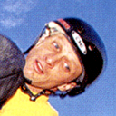

 Tony Hawk's Pro Skater 2
Details
| Playtime | Not Played |
| Last Activity | Never |
| Added | 21/02/2024 4:00:26 |
| Modified | 20/05/2024 22:32:56 |
| Completion Status | Not Played |
| Library | Playnite |
| Source | |
| Platform | Sony PlayStation |
| Release Date | 19/09/2000 |
| Community Score | 86 |
| Critic Score | 93 |
| User Score | 0 |
| Genre | Sports |
| Developer | Neversoft Entertainment |
| Publisher | Activision |
| Feature | Multiplayer Single Player |
| Links | |
| Tag | |
Description
Tony Hawk's Pro Skater 2 uses the same game engine as its predecessor while improving the graphics and gameplay, most notably with the introduction of manuals and cash rewards. The game takes place in a three-dimensional urban environment permeated by an ambience of punk rock and hip hop music. The player takes control of a variety of skateboarders and either performs skateboarding tricks or collects certain objects. The game offers several modes of gameplay, including a career mode in which the player must complete objectives and evolve their character's attributes with earned profits, a free-play mode in which the player may skate without any given objective, a multiplayer mode that features a number of competitive games, and a level editor that allows the player to create customized levels.
Tony Hawk's Pro Skater 2 was critically acclaimed upon release and is considered one of the greatest video games ever created, as well as the highest-rated sports video game. All versions of the game were praised, with critics lauding its addictive gameplay, large environments, detailed graphics, fluid and precise controls, customization features and soundtrack, with some minor criticisms directed at the lack of a first-person camera and the truncated soundtrack of the Nintendo 64 version. A sequel, Tony Hawk's Pro Skater 3, was released in 2001.